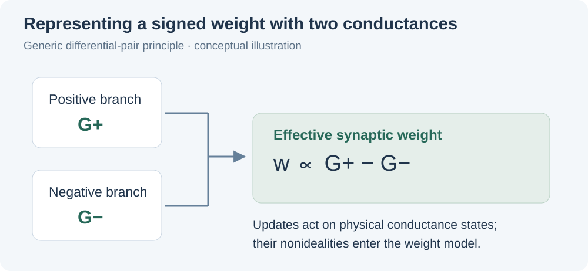
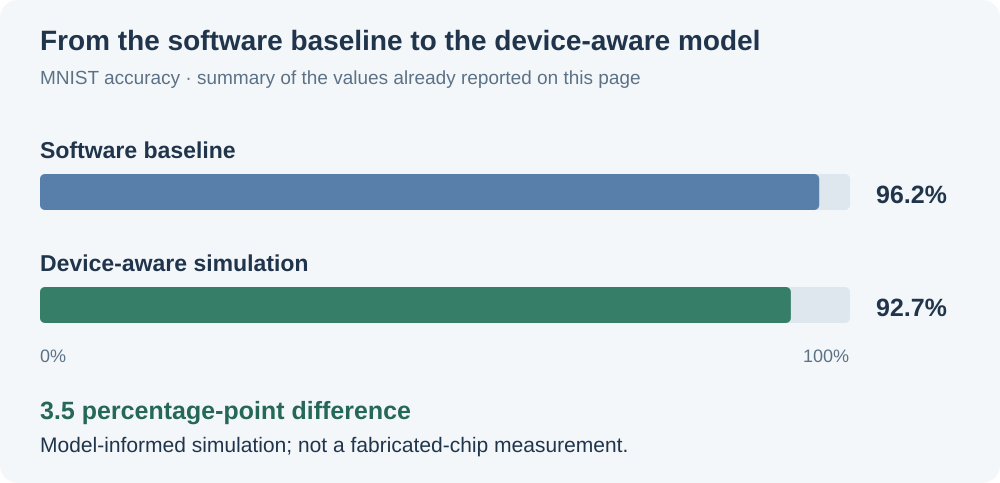

The research question
How do the measured nonidealities of a memristor affect a neural network that uses conductance states as synaptic weights?
An idealized weight update does not capture the asymmetry, variability, and history dependence of a physical device. I built a device-aware crossbar simulation for a dual-mode memristor to connect measured pulse behavior with network-level performance. The work uses differential-pair synapses and write verification to evaluate computation under a model informed by the device.
This is the computing component of the dual-mode memristor research in Wang’s Thin Film Group. It is related to, but distinct from, the Au–CeO₂ compact-model and programming project.
pulse data→Device
nonidealities→Differential-pair
synapses→Crossbar
simulation
My contribution
I built the device-aware simulation and extracted parameters from raw pulse data. My focus was the connection between experimental behavior and the assumptions used to represent synapses in computation.
- Pulse-data analysis. I extracted update nonlinearity and the number of steps associated with polarity reversal, alongside cycle-to-cycle and device-to-device variation.
- Nonideality modeling. I incorporated measured characteristics relevant to write/read noise and retention into the device-aware simulation.
- Synapse representation. I used write-verified differential pairs to represent synaptic weights and evaluated their network-level performance against a software baseline.
These choices make the device model part of the computational experiment. The resulting accuracy reflects the modeled device behavior and synapse implementation, rather than only the capacity of the neural network.

Network-level results
The device-aware simulation reached 92.7% MNIST accuracy, compared with a 96.2% software baseline: a difference of 3.5 percentage points.

These are simulation results informed by measured device data. They describe the modeled crossbar and synapse configuration; they are not measurements from a fabricated inference chip.
The comparison connects materials and device research to a system-level question: how much computational performance remains when the model accounts for the device’s nonideal behavior? It also provides a way to evaluate the implications of programming and synapse choices before committing to a physical array implementation.
Related research
Related manuscript: Z. Lin*, Henan Wang*, et al., “Realizing Dual-Mode Memristor Based on Ni₀.₈Fe₀.₂-BTO/BTO/Ni₀.₈Fe₀.₂-BTO Tri-layer Vertically Aligned Nanocomposites,” Small, under major revision. *Co-first authors.